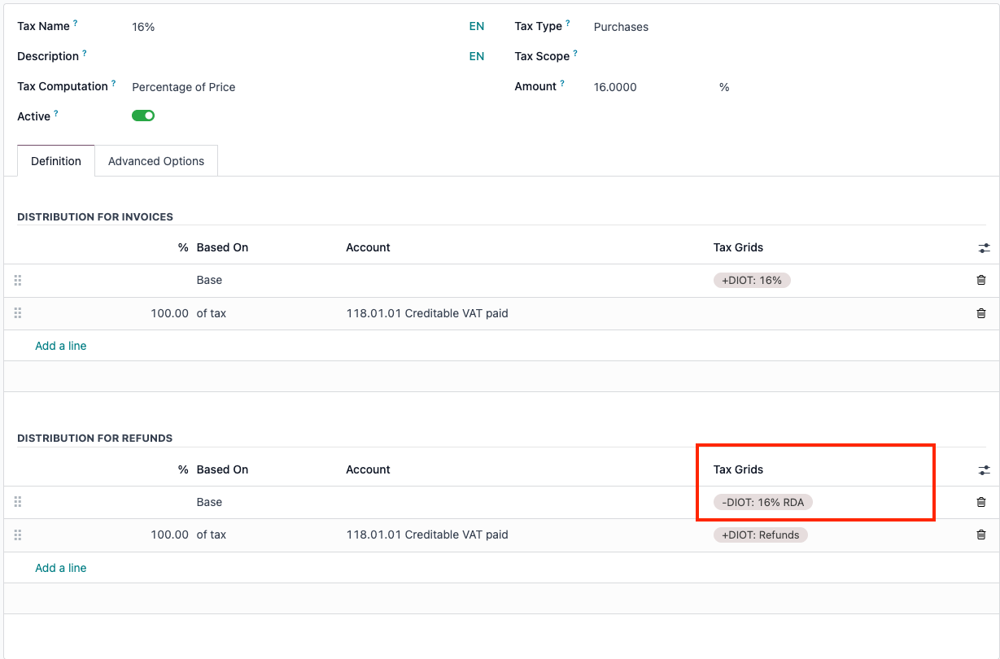
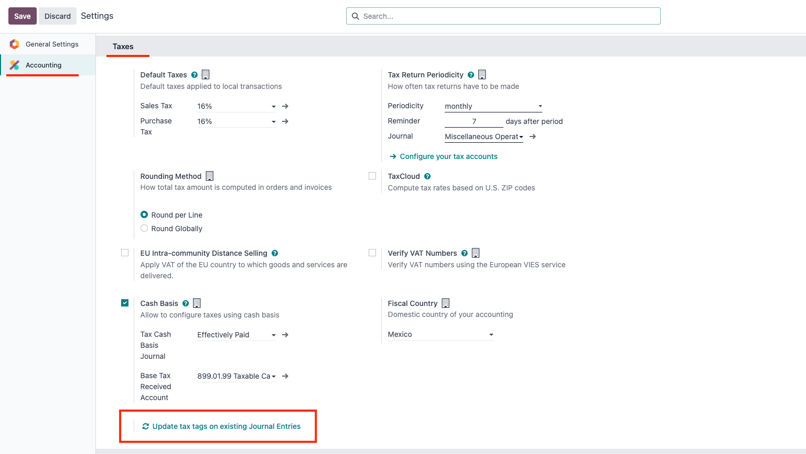
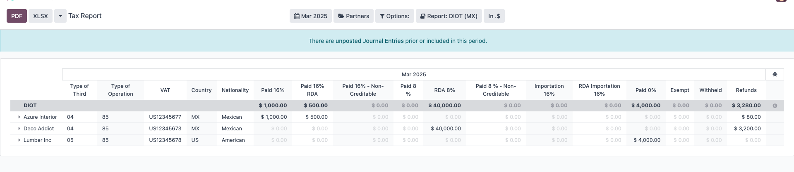

MX Reports DIOT (2025)
This module extends the DIOT (Declaración Informativa de Operaciones con Terceros) report functionality in Odoo for Mexican taxpayers. It adds new fields for the 2025 version and ensures the .txt file complies with the SAT requirements for DIOT submissions. This includes handling special cases for border zones (8% tax), identifying supplier types (national, foreign, global), and validating partner data (RFC, state, etc.).
VIDEO

Usage
-
Configure your partners with the appropriate tax information, including:
- RFC (Registro Federal de Contribuyentes).
- Address (especially the state if they apply to border regions).
- Type of operation and type of third party (national, foreign, global).
-
Set up the correct tax rates:
-
For 8% or 16% (including import taxes at 16%), ensure you assign the proper tax tags in the tax configuration, particularly for the "Distribution for Refunds" section. The label should include the
"RDA" suffix, for example: +DIOT: 16% RDA.
-
This step ensures Odoo correctly identifies refunds or partial credits when generating the DIOT report.

-
Regenerate tax tags if you already have existing data:
-
Install the account_update_tax_tags module.
-
Access Accounting > Configuration > Settings and run the Update tax tags on existing Journal Entries for the period(s) you need to report. This will update existing cash basis entries with the correct tags.

-
Generate the DIOT file:
-
From the Accounting menu (or the corresponding DIOT menu), generate the
.txt file in UTF-8 encoding following SAT requirements.

-
Validate or upload the
.txt file:
-
Use the SAT's DIOT tool or portal to ensure your operations are correctly reported before final submission.
Notes
-
For border zones with 8% tax, a warning is displayed if the partner's state (address) is not correctly set.
-
The updated structure for the DIOT 2025 requires careful assignment of tax tags (including the RDA suffix for refunds) to match the SAT's new reporting fields.
Credits
Contributors
- Luis Torres <luis_t@vauxoo.com> (Planner/Developer)
Maintainer
This module is maintained by Vauxoo.
A Latin American company that provides training, coaching, development, and implementation of enterprise management systems. It bases its entire operational strategy on the use of Open Source Software, focusing primarily on Odoo.